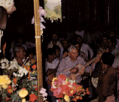

HOME FUNDEF
TAMUNANGUE
La Salve

Es un tono popular de estricto origen litúrgico, pues está inspirado en
el texto religioso de La Salve dirigido a la Virgen. A similitud
de los cantos de velorio, puede situarse al principio o al final de la
expresión del Tamunangue. La Salve se entona con la cabeza descubierta
en señal de respeto.
Música
La Salve modula de mayor
a menor y de mayor a la Dominante de la Dominante. Es a dos voces, y en ese juego entra primero la voz más grave y luego se le suma una voz más aguda. La voz más grave funciona como voz líder o de mando.